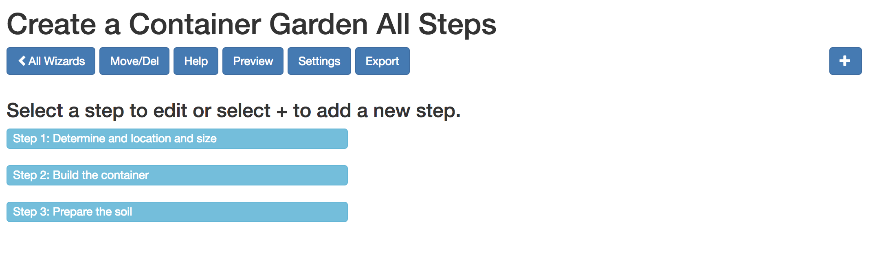
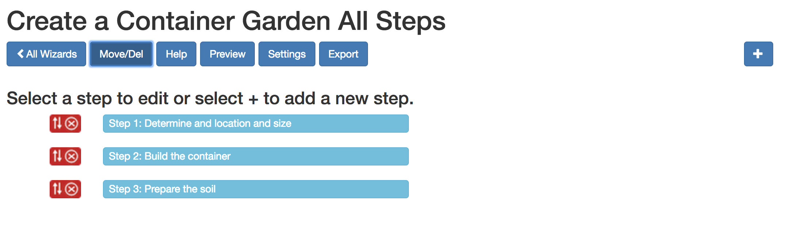
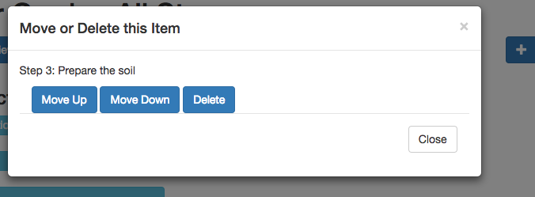

This page shows all steps for the wizard. The title of each step is inside a light blue button. To edit a step just select it. To add a new step, select the + icon in the upper right corner. The Settings button will return you to the Settings page for this wizard. Export will export the wizard so that you can install it on your web site.
Of course all you see here are the title of the steps. To see what the wizard will look like to the end user, select the Preview button. The final wizard will appear in a new tab.
To change the order of the steps select the large blue Move/Delete button. This will reveal a small red move/delete icon button to the left of each wizard.
When you select one of these red icon buttons you will see a pop-up window with three options You can move the step up or down or delete it.
